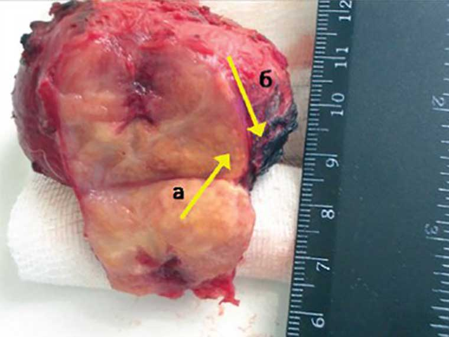
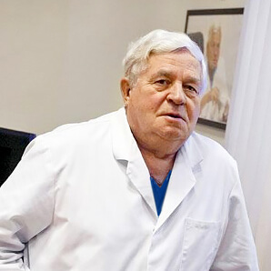

Nuo dažno šlapinimosi iki prostatos vėžio yra vienas žingsnis! Kaip laiku atpažinti
grėsmę? Pokalbis su vyriausiuoju Lietuvos urologu.
Eglė Varnelytė
Medicinos mokslų daktarė, pirmoji moteris urologė andrologė Kauno m.,
reproduktologė, vyriausioji mokslo darbuotoja Lietuvos Urologijos ir
intervencinės radiologijos tyrimų instituto Andrologijos skyriuje.
Darbo patirtis - daugiau nei 10 metų
KOKIE YRA PIRMIEJI PROSTATITO POŽYMIAI:
Dažnas šlapinimasis
Potencijos sumažėjimas (erekcijos
disfunkcija)
Šlapinimosi problemos
Nemalonūs pojūčiai ar skausmai kirkšnyje ir
apatinėje nugaros dalyje
Pradiniame etape liga gali praktiškai nepasireikšti, tačiau potencijos lygio
sumažėjimas ir šlapinimosi problemos yra pirmieji prasidedančio negalavimo
požymiai. Svarbiausia yra nedelsti! Impotencija nėra kenksmingiausias šios
ligos rezultatas. Daug pavojingesnis yra naviko susidarymas - prostatos
adenoma, dažniausiai sukelianti prostatos vėžį.
Todėl susirgimas prostatitu kelia net keletą pavojų vyrams, iš kurių
pagrindiniai yra:
IMPOTENCIJA - PROSTATOS ADENOMA – PROSTATOS
VĖŽYS

Pašaintas prostatos navikas (skersmuo
65mm)
Be to, impotencija pasitaiko 100 proc. atvejų, t.y. kiekvienam žmogui,
sergančiam prostatitu. Kažkam anksčiau, kažkam vėliau, bet visada.
Prostatos vėžys atsiranda vėlyvose prostatito stadijose, bet taip pat
neretai. Tie vyrai, kurie negydo prostatito ir gyvena su juo, iš tikrųjų
“žaidžia su ugnimi”. Jei norisi ilgai gyventi ir turėti gerą erekciją,
prostatitą reikia gydyti. Ir tai reikia daryti kuo greičiau.
Problema ta, kad dauguma susirgusių vyrų tiesiog nesikreipia į gydytojus
pagalbos. Dalis nelaiko to pavojinga, dalis - gėdinga. Dėl to susisklosto
situacija, kai ligoniai tiesiog ignoruoja ligą. Ir jei net kreipiasi
pagalbos, tada dažniausiai tais momentais, kai jau per vėlu ir pradeda
vystytis vėžinis navikas.
Prostatos vėžinio naviko pašalinimo
operacija
Reikia suprasti, kad prostatitas yra mirtina liga, kurios vienas iš
pagrindinių pavojų yra transformavimas į prostatos vėžinį naviką. O tai,
savo ruožtu, dažniausiai lemia ligonio mirtį. Liga, nekontroliuojama ir
negydoma, kartais vystosi labai greitai, jau po 102 metų ji sukelia vėžį.
Tačiau dabar vyrai turi unikalią galimybę kartą ir visiems laikams
atsikratyti šios ligos, ir be reguliaraus apsilankymo klinikoje.
Dalykas yra tas, kad metais pasirodė revoliucinis
vaistas, kuris
trumpiausiais terminais atstato prostatos liaukos funkciją, pašalina
uždegimą, jis visiškai išgydo net lėtinį prostatitą, bei žymiai padidina
potenciją ir lytinio akto trukmę. Šio vaisto pavadinimas yra .
Tai
labai prieinamas pagal kainą lietuviškas vaistas, nors jo kūrime taip pat
dalyvavo mokslininkai-medikai iš Vokietijos ir Prancūzijos.
Šiais metais Urologijos mokslo tyrimų institutas,
kuris yra pagrindinis Lietuvos mokslo
centras urologijos srityje, sėkmingai baigė naujos kartos vaisto “”,
skirto kovoti su prostatitu, klinikinius tyrimus. Instituto spaudos tarnyba
paskelbė:
“1. efektyvumas, apskaičiuotas pagal standartinį metodą
(atsigavusiųjų kiekis palyginant su bendru ligonių kiekiu grupėje iš
100 žmonių, kurie buvo atlikę gydymo kursą), buvo 98 proc..
2. Ligos požymių nebuvimas, nutraukus vaisto vartojimą (remiantis
šešių mėnesių stebėjimo rezultatais) buvo 99 proc..
3. Po savaitės vaisto vartojimo visi pacientai pastebėjo reikšmingą
libido ir potencijos padidėjimą.
4. Šis vaistas lėmė lytinio akto trukmės padidėjimą 95 proc.
tiriamųjų.
5. Nepageidaujamo šalutinio poveikio, įskaitant alergines reakcijas,
nenustatyta.
6. Revoliucinis vaistas “” yra pripažintas pagrindine kovos
su prostatitu priemone."
Eksperto komentarai:

Algirdas Tumėnas
Urologijos klinikos ir urologijos skyriaus vedėjas, Uronefrologijos ir
žmogaus reprodukcinės sveikatos tyrimų instituto direktoriaus
pavaduotojas, Mokslų akademijos narys, profesorius, žinomas
urologas.
Darbo patirtis - daugiau nei 45 metai
Iki m. Lietuva neturėjo veiksmingų ir, svarbiausia,
prieinamų priemonių
prostatitui gydyti. Ir tai sukėlė neįtikėtinų pasekmių - susirgimo lygis
buvo 45 proc. suaugusiųjų gyventojų, o blogiausia – 30 proc. tarp jaunuolių.
yra revoliucija gydant prostatitą, tikra panacėja. Vaisto
veiksmingumas įrodytas praktikoje Lietuvoje. Unikali sudėtis ir tai, kad
mokslininkai atskleidė gyvąsias ląsteles, padarė būtinu prostatitui
gydyti.
Vaistas buvo kliniškai patikrintas. Rezultatai buvo tikras šokas urologams.
Apie 98 proc. visų pacientų pasveikė be jokių recidyvų. Visiems kitiems
simptomatika visiškai dingo ir susistabdė uždegiminius procesus prostatoje.
Nepaisant to, tarp likusių 2 proc. ligonių galėjo būtų tam tikrų recidyvų,
kurie, toliau vartojant , dingo.
Dėl unikalių komponentų derinio
taip pat pastebimai padidėja potencijoą ir lytinio akto
trukmė.
yra geras
tuo, kad išsprendžia problemą kompleksiškai. Jis turi fenomenalų gydomąjį
poveikį visai vyrų urogenitalinei sistemai. Paprasčiau tariant, atlikus
vaisto kursą, vyrų organizmas pradeda funkcionuoti 25 metų lygyje. Štai
kodėl aš jį rekomenduoju absoliučiai visiems vyrams. Net jei prostatito
nėra, vaistas atliks veiksmingą prevenciją ir žymiai padidins potenciją.
Be Lietuvos, vaistas buvo sertifikuotas Europoje Paryžiaus urologijos
universitete. Klinikiniai tyrimai visiškai patvirtino Lietuvos duomenis.
Prancūzai netgi gavo didesnį atsigaunančiųjų procentą.
Šiuo metu “” galima užsisakyti tik projekto svetainėje.
Mes daug kartų bandėme įsilaužti į vaistinių tinklus, tačiau ten
nori nustatyti kuo didesnę kainą už jį ir parduoti kelis kartus
brangiau, nei mes norėtume. Suprantat, Urologijos institutas, kaip
ir visa Sveikatos apsaugos ministerija, yra ne pelno organizacija.
Ir mes nesiekiame tikslo užsidirbti. Tiesiog norime aprūpinti šia
priemone visus gyventojus. Todėl parduodame jį nuostolingai,
kompensuodami skirtumą dėl jo eksporto. O pagrindinis vaistinių
tinklų tikslas yra užsidirbti pinigų. Todėl mes turime radikaliai
skirtingus požiūrius į kainų
susidarymą.
Šiuo metu jie kartu su Sveikatos apsaugos ministerija rengia akciją
“Nugalėkime prostatitą - išgelbėsime Lietuvos žmones”. Todėl dabar
galima įsigyti specialioje svetainėje.
194 komentarai
Vytautas
Maždaug prieš mėnesį užsisakiau efektas atsirado jau po savaitės
vartojimo. Apskritai galvojau apie operaciją, dabar viskas
atšauktapasikeitė. Man 54 metai, bet jaučiuosi kaip 34, to net
nesitikėjau)
Prieš 12 minučių
Kęstutis Barnėnas
Visiškai patvirtinu! Vaistas yra super! Aš nusipirkau ne taip seniai,
maždaug prieš pusantro mėnesio, nuo tol nežinau jokių problemų.
Prostatitas dingo visiškai, nors prieš tai ilgai išgydyti negalėjau jį
išgydyti, be to, erekcija žymiai pagerėjo ir atsirado daugiau noro
užsiimti seksu! Rekomenduoju visiems, ypač vyrams po 40 metų!
Ačiū .
Prieš 17 minučių
Aleksas
Broliai, neužleiskite, prostatitas būtent tuo pavojingas, kad
lėtinėje formoje gali sukelti prostatos liaukos vėžį. Taip buvo pas mano
giminaitį, todėl, kai tik man prasidėjo problemos, iškart kreipiausi į
gydytoją. Bet vis be prasmės. Gydysiuos - tai tikrai!
Prieš 19 minučių
Algirdas Butkūnas
Pastaruosius pusantrų metų man skaudėjo prostatą, aplankiau masažą,
vartojau tabletes, bet viskas pasikartojo. Bet jau labai greitai
išsprendė visas problemas ir aš tikrai pamiršau apie prostatą, nors
gydytojai jau yra priėmę nuosprendį, kad tai lėtinis, ir
viskas.
Prieš 20 minučių
Deivydas
Aš pradėjau nuo garsaus vaisto “Afal”, vartojau taip, kaip nurodė
gydytojas, beveik 2 mėnesius, jokios prasmės. Nebuvo geriau, bet vis
dažniau bėgau į tualetą. Dėl to gydymas pasirodė nesėkmingas, o po to
internete aptikau . Ir pamaniau, kad pabandysiu, jeigu jau
medicina yra bejėgė) Taigi, medicina yra tikrai bejėgė, o mano
problemą išsprendė greitai ir visiškai!
Prieš 24 minutes
Jonas Petrauskas
Visai negalvojau, kad vieną dieną ir man nustatys šią baisią
diagnozę. Jaunuoliui tai kaip pabaiga pasitikėjimo savimi ir seksualinio
gyvenimo. Na, aš nenusivyliau, gydžiausi kompleksiškai. Nesigailėjau
pinigų gydymui. Ilgai gydžiausi, bet galų gale man padėjo tik !
Nesitikėjau to tikrai, jis veikia greitai ir veiksmingai
Prieš 27 minutes
Valdas Dapkiūnas
Aš jums galiu garantuoti. Patikrinau su savimi. Iš pradžių aš
vartojau aibę antibiotikų, lankiau masažą, šiaip jau, ilgai ir daug
gydžiausi. Bet po poros mėnesių viskas, prostata imdavo apie save
priminti. O jau po praėjo 4 mėnesiai, tad pamiršau, kad kadaise
turėjau prostatitą.
Prieš 30 minučių
Petras Kumėnas
Vyrai, tai kažkoks košmaras. Penkeri metai jau gyvenu su prostatitu!
Paūmėjimai iki dešimties kartų per metus! Lengvas vėjelis ir jau visi
simptomai. Kreipiausi į gydytojus, jie išrašo antibiotikus, bet niekas
nepadeda. Tik laikini pagerėjimai ir viskas iš naujo! Jau nebenoriu
vartoti antibiotikus, man atrodo, kad organizmas nebegali jų toleruoti.
Manote, kad padės?
Prieš 34 minutes
Gitanas Nausėdauskas
Aš gydžiau prostatitą “Vitafonu”, nusipirkau jį dar 2000 metais. O
dar dariau pratimus norėdamas sumažinti sąstingį mažajame dubens
srityje, tikrai padėdavo, bet po to vėl primindavo apie save, vėl
atlikau tą patį kursą. O po jokių problemų, viskas dingo kartą
ir visiems laikams.
Prieš 37 minutes
Rasa
Mano vyras taip pat turėjo problemų, ilgą laiką bandė išgydyti,
tačiau nepavyko. Vėliau vienas gydytojas pasakė, kad prostatitą
sukeliančios bakterijos pripranta prie antibiotikų, kuriais gydėsi
vyras. Ir jis patarė . Vyras dėkodamas jam vėliau padovanojo
dėžę viskio.
Prieš 49 minutes
Andrius
Vistiek pasikonsultavau su gydytoju dėl , ir gydytojas sakė,
kad jis abejoja, tačiau jei pabandysiu, jis džiaugsis sužinoti
rezultatą. Bet rezultatas gavosi puikus, aš išsigydžiau nuo prostatito,
tačiau gydytojas taip nieko ir nepasakė...
Prieš 53 minutes
Paulius
Apskritai, neturi analogų rinkoje. Šis vaistas taip pat yra
onkoprotektorius. Tai vienintelis vaistas, veikiantis 100 proc. Aš
patikrinau jo poveikį su savimi, o po to jis taip pat padėjo dviem mano
pažįstamams. Apskritai galiu tiksliai pasakyti, kad tai nėra subjektyvi
nuomonė, o kelių žmonių išgydymas.

 Prostatos vėžinio naviko pašalinimo operacija
Prostatos vėžinio naviko pašalinimo operacija


Maždaug prieš mėnesį užsisakiau efektas atsirado jau po savaitės vartojimo. Apskritai galvojau apie operaciją, dabar viskas atšauktapasikeitė. Man 54 metai, bet jaučiuosi kaip 34, to net nesitikėjau)